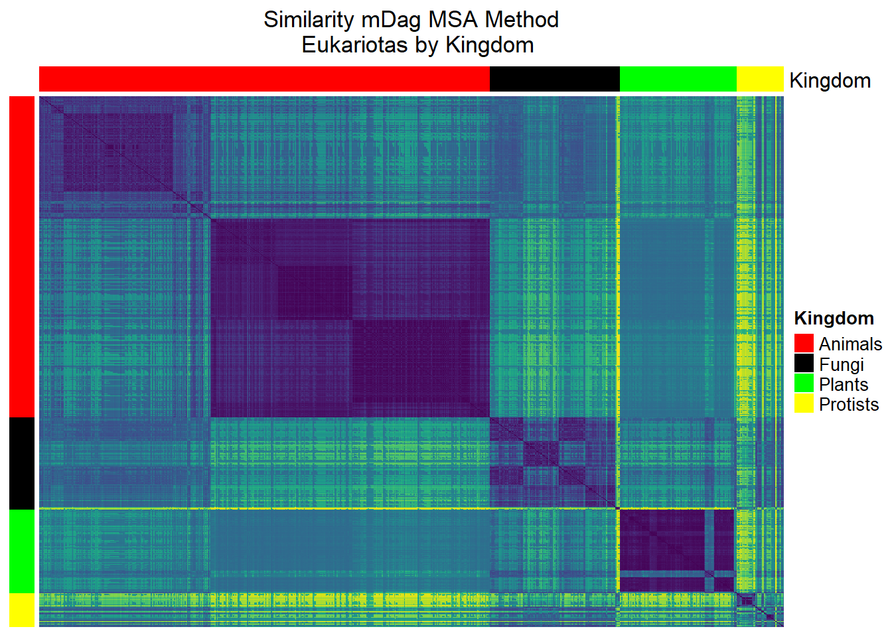
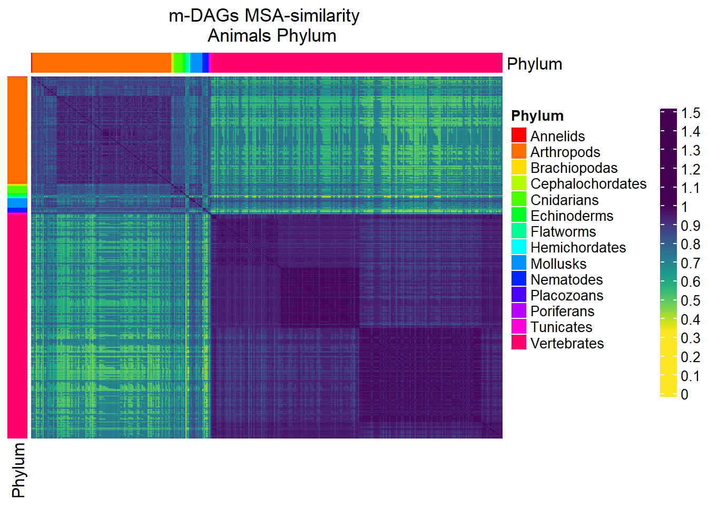
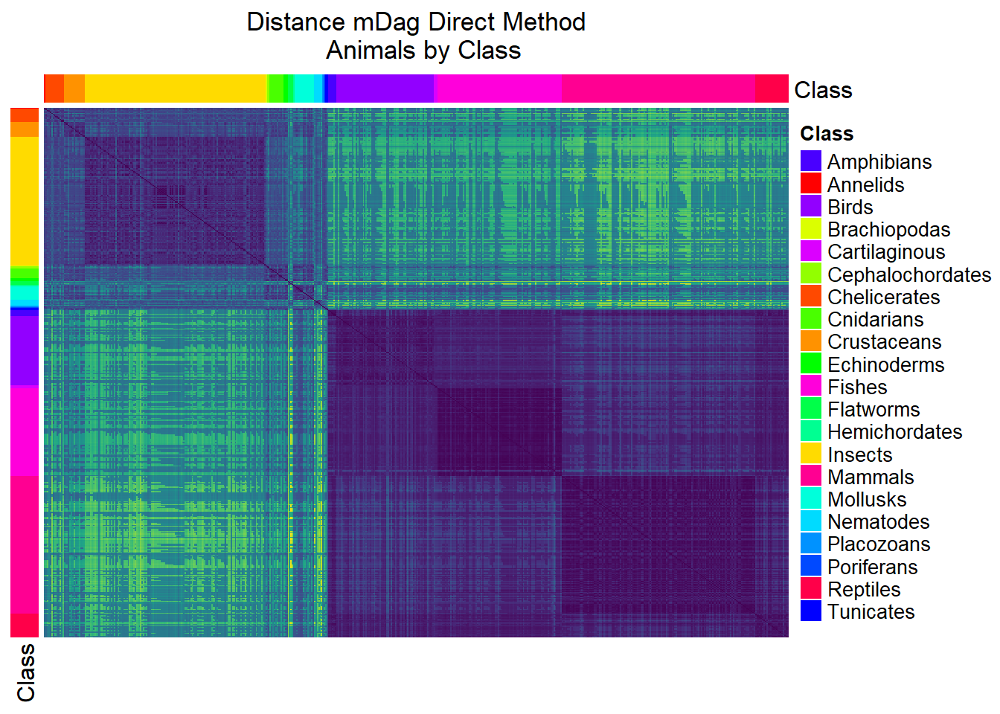
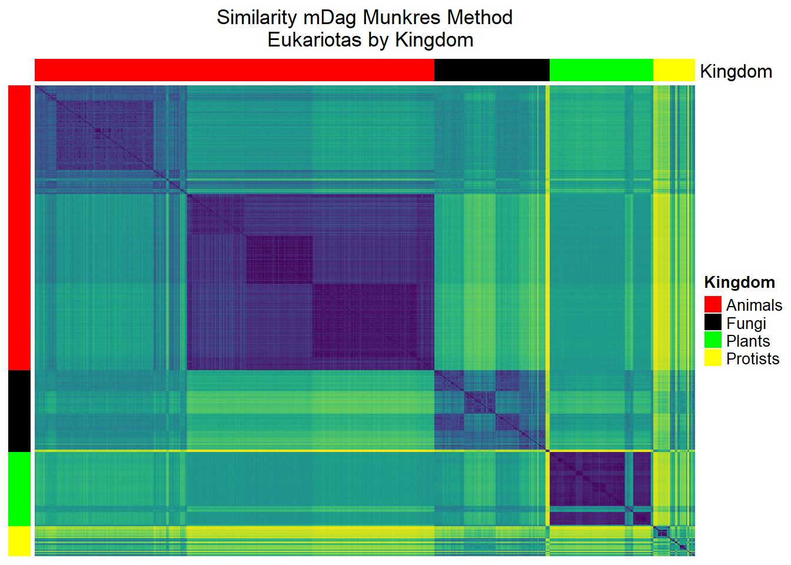
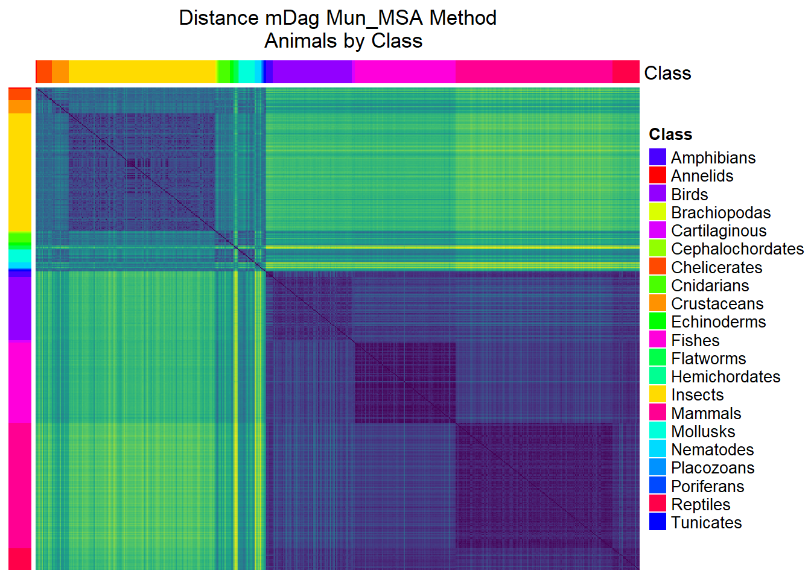
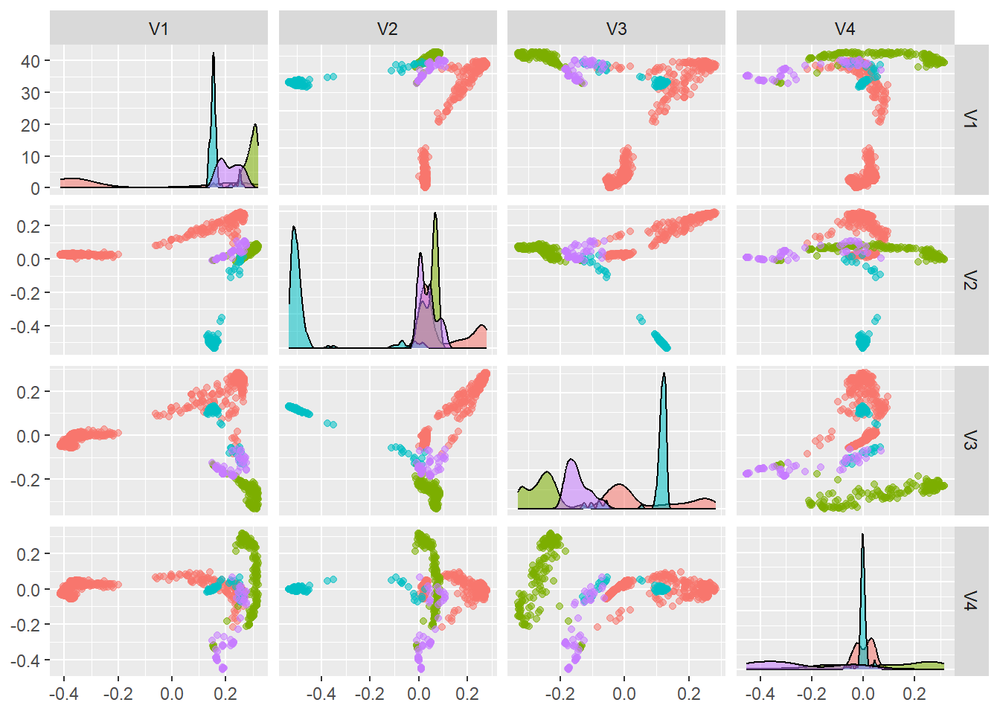
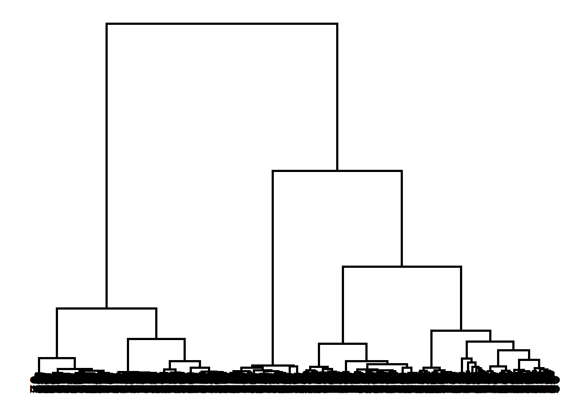

library(tidyverse)
library(ComplexHeatmap)
library(viridis)
library(circlize)
library(plotly)
library(randomcoloR)
#library(knitr)
#library(kableExtra)
library(factoextra)
library(RColorBrewer)
library(kableExtra)
path_exp="data/results_ff15c187-62e7-37c2-96a7-c824f7eab671/data/"2 Load several similarities and metadata for an experiment
2.1 Data analysis whit 4 methods similarities Direct, Munkrest, Direct_Munkrest and Munkrest_Direct
2.2 Load several similarities for mDag
3 Load meta data from eukariotes experimet
Meta data mDa_Id and taxonomy sort by Kingdom,Filum,Class,mDAG_Id
path_expFALSE [1] "data/results_ff15c187-62e7-37c2-96a7-c824f7eab671/data/"Results=read_csv(paste0(path_exp,"Results.csv"))
names(Results)[c(1,3,4)]=c("Organism","mDAG_Id","Full_Name")
#code=Results %>% select(Organism:mDAG_Id)
taxo=Results %>% select(Organism:Full_Name)
index=is.na(taxo$Categories)
taxo=taxo %>% separate(Categories,into=c("Kingdom","Phylum","Class"))
taxo$Class[index]=paste(taxo$Kingdom[index],taxo$Phylum[index])
meta_taxo=taxo %>% arrange(Kingdom,Phylum)
index=which(is.na(meta_taxo$Class))
meta_taxo$Class[index]=meta_taxo$Phylum[index]
aux=table(meta_taxo$Class)
freq=tibble(Class=names(aux),Freq_Class=aux)
names(freq)=c("Class","Freq_Class")
meta_taxo =meta_taxo %>% left_join(freq)%>%
arrange(Kingdom,Phylum,Class,desc(Freq_Class))
head(meta_taxo)FALSE # A tibble: 6 × 7
FALSE Organism Kingdom Phylum Class mDAG_Id Full_Name Freq_Class
FALSE <chr> <chr> <chr> <chr> <chr> <chr> <table[1d>
FALSE 1 hro Animals Annelids Annelids 0576 Helobdella robusta 1
FALSE 2 cscu Animals Arthropods Chelicerates 0592 Centruroides scul… 13
FALSE 3 dfr Animals Arthropods Chelicerates 0547 Dermatophagoides … 13
FALSE 4 dpte Animals Arthropods Chelicerates 0867 Dermatophagoides … 13
FALSE 5 dsv Animals Arthropods Chelicerates 0706 Dermacentor silva… 13
FALSE 6 isc Animals Arthropods Chelicerates 0075 Ixodes scapularis… 13table(meta_taxo$Kingdom) %>% kable %>%
kable_styling("striped", full_width = F,position="left")%>%
scroll_box(width = "400px", height = "200px")| Var1 | Freq |
|---|---|
| Animals | 535 |
| Fungi | 154 |
| Plants | 139 |
| Protists | 56 |
table(meta_taxo$Phylum,meta_taxo$Kingdom) %>% kable %>%
kable_styling("striped", full_width = F,position="left")%>%
scroll_box(width = "500px", height = "500px")| Animals | Fungi | Plants | Protists | |
|---|---|---|---|---|
| Alveolates | 0 | 0 | 0 | 25 |
| Amoebozoa | 0 | 0 | 0 | 7 |
| Annelids | 1 | 0 | 0 | 0 |
| Arthropods | 158 | 0 | 0 | 0 |
| Ascomycetes | 0 | 113 | 0 | 0 |
| Basal | 0 | 0 | 2 | 0 |
| Basidiomycetes | 0 | 36 | 0 | 0 |
| Brachiopodas | 1 | 0 | 0 | 0 |
| Cephalochordates | 2 | 0 | 0 | 0 |
| Choanoflagellates | 0 | 0 | 0 | 2 |
| Cnidarians | 10 | 0 | 0 | 0 |
| Cryptomonads | 0 | 0 | 0 | 1 |
| Echinoderms | 3 | 0 | 0 | 0 |
| Eudicots | 0 | 0 | 98 | 0 |
| Euglenozoa | 0 | 0 | 0 | 9 |
| Ferns | 0 | 0 | 1 | 0 |
| Flatworms | 4 | 0 | 0 | 0 |
| Green | 0 | 0 | 11 | 0 |
| Haptophyta | 0 | 0 | 0 | 1 |
| Hemichordates | 1 | 0 | 0 | 0 |
| Heterolobosea | 0 | 0 | 0 | 1 |
| Metamonada | 0 | 0 | 0 | 2 |
| Microsporidians | 0 | 5 | 0 | 0 |
| Mollusks | 14 | 0 | 0 | 0 |
| Monocots | 0 | 0 | 23 | 0 |
| Mosses | 0 | 0 | 1 | 0 |
| Nematodes | 6 | 0 | 0 | 0 |
| Placozoans | 1 | 0 | 0 | 0 |
| Poriferans | 1 | 0 | 0 | 0 |
| Red | 0 | 0 | 3 | 0 |
| Stramenopiles | 0 | 0 | 0 | 8 |
| Tunicates | 2 | 0 | 0 | 0 |
| Vertebrates | 331 | 0 | 0 | 0 |
4 Similarities for Direct (MSA) method
In this section we will show the similarities between mDAG’s using different methods.
The experiment data set consists of 884 eurkaryotes from the animal, plant, fungus, and protist kingdoms.
| Kingdom | Abs. Freq. |
|---|---|
| Animals | 535 |
| Fungi | 154 |
| Plants | 139 |
| Protists | 56 |
list_Sim=dir(path_exp,pattern="^Similarities")
list_SimFALSE [1] "Similarities_MBB_MSAMethod.csv"
FALSE [2] "Similarities_MBB_MunkresMethod.csv"
FALSE [3] "Similarities_mDAG_MSAMethod.csv"
FALSE [4] "Similarities_mDAG_MSAMethod_MunkresMethod.csv"
FALSE [5] "Similarities_mDAG_MunkresMethod.csv"
FALSE [6] "Similarities_mDAG_MunkresMethod_MSAMethod.csv"
FALSE [7] "Similarities_mDAGOnReaction.csv"list_Sim_mDAG=dir(path_exp,pattern="^Similarities_mDAG")
list_Sim_mDAGFALSE [1] "Similarities_mDAG_MSAMethod.csv"
FALSE [2] "Similarities_mDAG_MSAMethod_MunkresMethod.csv"
FALSE [3] "Similarities_mDAG_MunkresMethod.csv"
FALSE [4] "Similarities_mDAG_MunkresMethod_MSAMethod.csv"
FALSE [5] "Similarities_mDAGOnReaction.csv"list_Sim_mDAG[1]FALSE [1] "Similarities_mDAG_MSAMethod.csv"Sim_MSA_mDAG=read_csv(paste0(path_exp,list_Sim_mDAG[1]))
Sim_MSA_mDAG=as.matrix(Sim_MSA_mDAG[,-1])
rownames(Sim_MSA_mDAG)=colnames(Sim_MSA_mDAG)
Sim_MSA_mDAG=Sim_MSA_mDAG[meta_taxo$mDAG_Id,meta_taxo$mDAG_Id]list_Sim_mDAG[3]FALSE [1] "Similarities_mDAG_MunkresMethod.csv"Sim_Mun_mDAG=read_csv(paste0(path_exp,list_Sim_mDAG[3]))
Sim_Mun_mDAG=as.matrix(Sim_Mun_mDAG[,-1])
rownames(Sim_Mun_mDAG)=colnames(Sim_Mun_mDAG)
Sim_Mun_mDAG=Sim_Mun_mDAG[meta_taxo$mDAG_Id,meta_taxo$mDAG_Id]4.1 Heatmaps
4.2 Heatmap Similarity MSA method
dff<-meta_taxo %>% select(Kingdom) %>% as.data.frame()
#str(dff)
colores <- list(Kingdom= c("Animals"="purple","Plants"="green","Fungi"="yellow","Protists"="coral"))
anotacion <- HeatmapAnnotation(df=dff, col = colores)
S=Sim_MSA_mDAG
a<- Heatmap(matrix = Sim_MSA_mDAG,
column_title="Similarity mDag MSA Method\n Eukariotas by Kingdom",
name = "Kingdom",
heatmap_legend_param = list(
at = c(0.4,0.5,0.6,0.7,0.8,0.9,1)),
col=rev(viridis(256)),
cluster_rows = FALSE,
cluster_columns = FALSE,
top_annotation = anotacion,
show_column_names = FALSE,
show_row_names = FALSE,
left_annotation = rowAnnotation(df = dff, col = colores,show_annotation_name=FALSE))
draw(a, merge_legend = TRUE)
meta_animals= meta_taxo %>% filter(Kingdom=="Animals")
nombres=unique(meta_animals$Phylum)
aux_order=table(meta_animals$Phylum)
dff<-meta_taxo %>% filter(Kingdom=="Animals") %>% select(Class) %>% as.data.frame()
#str(dff)
nombres=unique(dff$Class)
col=rainbow(length(nombres))
colores=list(Class=col)
names(colores$Class)=nombres
#paste0(paste0('"',nombres,'"="',col,'"'),collapse=",")
# colores <- list(Class=c(
# "Amphibians"="#FF0000","Annelids"="#FF4900",
# "Cartilaginous"="#FF9200","Cephalochordates"="#FFDB00",
# "Chelicerates"="#DBFF00","Cnidarians"="#92FF00",
# "Crustaceans"="#49FF00","Echinoderms"="#00FF00",
# "Fishes"="#00FF49","Flatworms"="#00FF92",
# "Hemichordates"="#00FFDB","Insects"="#00DBFF",
# "Mammals"="#0092FF","Mollusks"="#0049FF",
# "Nematodes"="#0000FF","Placozoans"="#4900FF",
# "Poriferans"="#9200FF",
# "Reptiles"="#DB00FF",
# "Tunicates"="#FF00DB",
# "Mammals"="#FF0092",
# "Reptiles"="#FF0049"))
# aux=names(colores$Class)
# colores$Class=as.character(palette.colors(n=21,palette="Polychrome 36"))
# attr(colores$Class,"names")=aux
anotacion <- HeatmapAnnotation(df=dff, col = colores)
a2<- Heatmap(matrix = S[1:535,1:535],
column_title="Dimilarity mDag Direct Method\n Animals by Class",
name = "Class",
heatmap_legend_param = list(
at = seq(0,1.5,by=0.1)),
col=rev(viridis(256)),
cluster_rows = FALSE,
cluster_columns = FALSE,
top_annotation = anotacion,
show_column_names = FALSE,
show_row_names = FALSE,
left_annotation = rowAnnotation(df = dff, col = colores,show_annotation_name=TRUE))
draw(a2, merge_legend = TRUE)
4.3 MDS (Multidimensional Scaling)
## Metric multidimensional scaling (mMDS)
mds7 <- cmdscale(sqrt(1-Sim_MSA_mDAG^2),k=7,eig=TRUE)
#pairs(mds7$points[,1:4])
mds7$GOFFALSE [1] 0.4406568 0.5541042mds <- mds7$points %>% as_tibble()
colnames(mds) <-paste0("Dim.",1:dim(mds7$points)[2])
library(GGally)
ggpairs(as_tibble(mds7$points),columns=1:4,aes(color=meta_taxo$Kingdom,alpha=0.5),upper=list(continuous="points")) 
mds <- mds %>%
mutate(groups =as.factor(meta_taxo$Kingdom))
#,text= ~paste("Age:", groups, '<br>Name:')
length(unique(meta_taxo$Phylum))FALSE [1] 33#col_mds=c("purple","green","yellow","coral")
col_mds=rainbow(33)
#mcol_mds=bremer.pal(7,"Greens")
fig <-
plot_ly(
mds, x = ~Dim.1, y = ~Dim.2,
color = ~groups,
colors= col_mds,
type="scatter",
mode="markers") %>%
layout(
xaxis = list(autorange=2,
range=c(-0.8,0.8)), yaxis = list(autorange=2,
range=c(-0.8,0.8)))
#fig5 Hierarchical cluster
library(dendextend)
D=as.dist(sqrt(1-Sim_MSA_mDAG^2))
hc=hclust(as.dist(D),method ="ward.D")
ggplot(as.ggdend(as.dendrogram(hc)))
clust4=cutree(hc,4)
table(clust4,meta_taxo$Kingdom)FALSE
FALSE clust4 Animals Fungi Plants Protists
FALSE 1 195 0 0 0
FALSE 2 9 154 14 56
FALSE 3 331 0 0 0
FALSE 4 0 0 125 06 Similarities Munkres method
6.1 Heatmap Similarity Mun_MSA method
dff<-meta_taxo %>% select(Kingdom) %>% as.data.frame()
#str(dff)
colores <- list(Kingdom= c("Animals"="purple","Plants"="green","Fungi"="yellow","Protists"="coral"))
anotacion <- HeatmapAnnotation(df=dff, col = colores)
S=Sim_Mun_mDAG
a<- Heatmap(matrix = Sim_Mun_mDAG,
column_title="Similarity mDag Munkres Method\n Eukariotas by Kingdom",
name = "Kingdom",
heatmap_legend_param = list(
at = c(0.4,0.5,0.6,0.7,0.8,0.9,1)),
col=rev(viridis(256)),
cluster_rows = FALSE,
cluster_columns = FALSE,
top_annotation = anotacion,
show_column_names = FALSE,
show_row_names = FALSE,
left_annotation = rowAnnotation(df = dff, col = colores,show_annotation_name=FALSE))
draw(a, merge_legend = TRUE)
meta_animals= meta_taxo %>% filter(Kingdom=="Animals")
nombres=unique(meta_animals$Phylum)
aux_order=table(meta_animals$Phylum)
dff<-meta_taxo %>% filter(Kingdom=="Animals") %>% select(Class) %>% as.data.frame()
#str(dff)
nombres=unique(dff$Class)
col=rainbow(length(nombres))
colores=list(Class=col)
names(colores$Class)=nombres
#paste0(paste0('"',nombres,'"="',col,'"'),collapse=",")
# colores <- list(Class=c(
# "Amphibians"="#FF0000","Annelids"="#FF4900",
# "Cartilaginous"="#FF9200","Cephalochordates"="#FFDB00",
# "Chelicerates"="#DBFF00","Cnidarians"="#92FF00",
# "Crustaceans"="#49FF00","Echinoderms"="#00FF00",
# "Fishes"="#00FF49","Flatworms"="#00FF92",
# "Hemichordates"="#00FFDB","Insects"="#00DBFF",
# "Mammals"="#0092FF","Mollusks"="#0049FF",
# "Nematodes"="#0000FF","Placozoans"="#4900FF",
# "Poriferans"="#9200FF",
# "Reptiles"="#DB00FF",
# "Tunicates"="#FF00DB",
# "Mammals"="#FF0092",
# "Reptiles"="#FF0049"))
# aux=names(colores$Class)
# colores$Class=as.character(palette.colors(n=21,palette="Polychrome 36"))
# attr(colores$Class,"names")=aux
anotacion <- HeatmapAnnotation(df=dff, col = colores)
a2<- Heatmap(matrix = S[1:535,1:535],
column_title="Distance mDag Mun_MSA Method\n Animals by Class",
name = "Class",
heatmap_legend_param = list(
at = seq(0,1.5,by=0.1)),
col=rev(viridis(256)),
cluster_rows = FALSE,
cluster_columns = FALSE,
top_annotation = anotacion,
show_column_names = FALSE,
show_row_names = FALSE,
left_annotation = rowAnnotation(df = dff, col = colores,show_annotation_name=FALSE))
draw(a2, merge_legend = TRUE)
6.2 MDS (Multidimensional Scaling)
## Metric multidimensional scaling (mMDS)
mds7 <- cmdscale(sqrt(1-Sim_Mun_mDAG^2),k=7,eig=TRUE)
#pairs(mds7$points[,1:4])
mds7$GOFFALSE [1] 0.5599891 0.5796237mds <- mds7$points %>% as_tibble()
colnames(mds) <-paste0("Dim.",1:dim(mds7$points)[2])
library(GGally)
ggpairs(as_tibble(mds7$points),columns=1:4,aes(color=meta_taxo$Kingdom,alpha=0.5),upper=list(continuous="points")) 
#cmdscale(D,2,eig=TRUE)$GOF
# Plot MDS
#mds <- mds %>%
# mutate(groups =as.factor(sim0_meta$Kingdom))
mds <- mds %>%
mutate(groups =as.factor(meta_taxo$Kingdom))
#,text= ~paste("Age:", groups, '<br>Name:')
length(unique(meta_taxo$Phylum))FALSE [1] 33#col_mds=c("purple","green","yellow","coral")
col_mds=rainbow(33)
#mcol_mds=bremer.pal(7,"Greens")
fig <-
plot_ly(
mds, x = ~Dim.1, y = ~Dim.2,
color = ~groups,
colors= col_mds
) %>%
layout(
xaxis = list(autorange=2,
range=c(-0.8,0.8)), yaxis = list(autorange=2,
range=c(-0.8,0.8)))
#fig
7 Hierarchical cluster
library(dendextend)
D=as.dist(sqrt(1-Sim_Mun_mDAG^2))
hc=hclust(as.dist(D),method ="ward.D")
ggplot(as.ggdend(as.dendrogram(hc)))
clust4=cutree(hc,4)
table(clust4,meta_taxo$Kingdom)FALSE
FALSE clust4 Animals Fungi Plants Protists
FALSE 1 197 0 0 0
FALSE 2 7 154 14 56
FALSE 3 331 0 0 0
FALSE 4 0 0 125 0save(Sim_MSA_mDAG,Sim_Mun_mDAG,meta_taxo,
file="Similarities.Rdata")